כל המתכונים
24 מתכונים · חפשו לפי שם או סננו לפי סוג
פאי רועים
— של אמא
בשרי
פאי פיצוחים בקרמל
— מהקלסר של תמר
פרווה
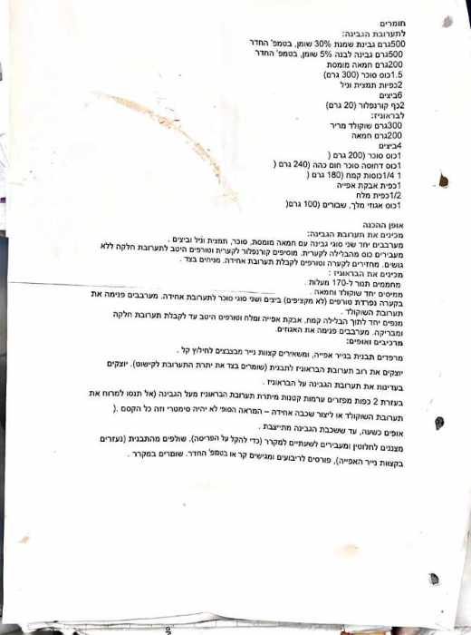
עוגת גבינה בראוניז
— דבי יעל
חלבי
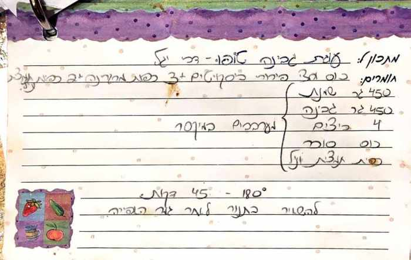
בואיקוס בולגריים קלים
— מהמשפחה
חלבי
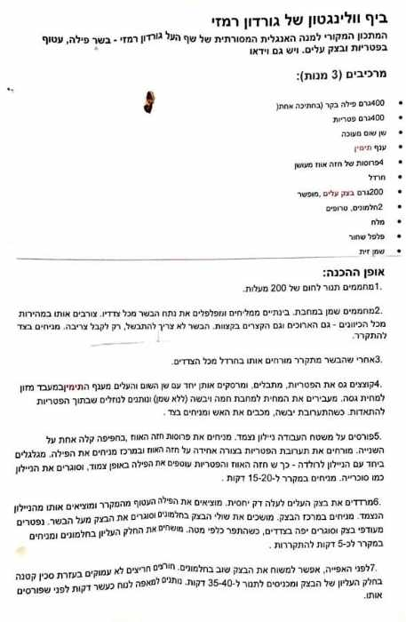
ביף וולינגטון
— גורדון רמזי
בשרי
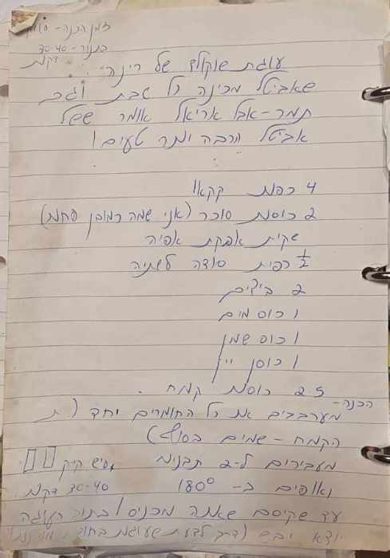
עוגת השוקולד של רינה
— שאביטל מכינה כל שבת, וגם תמר. ורבה וגם טעים!
פרווה
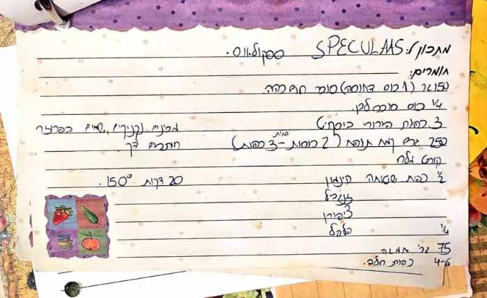
עוגיות ספקולאס
— מהקלסר של תמר
חלבי
פוקאצ׳ה קלאסית עם שום ורוזמרין
— גזיר עיתון, 2018
פרווה
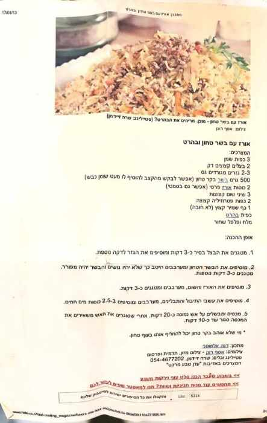
אורז עם בשר טחון ובהרט
— דנה אלמוסני, מהעיתון
בשרי
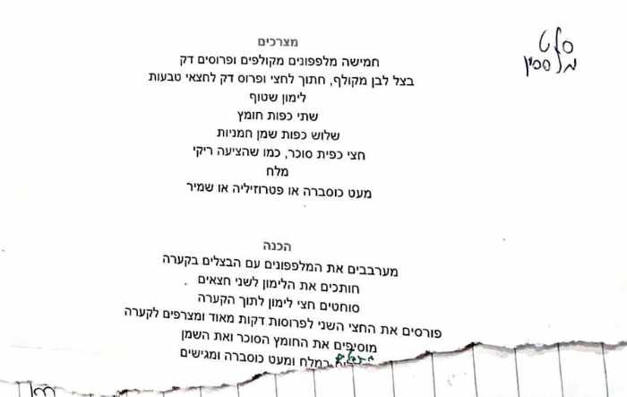
סלט מלפפונים
— חמוץ-מתוק
פרווה
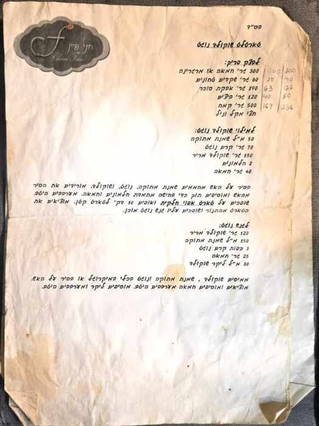
טארטלט שוקולד נוגט
— חני פיין
חלבי
טארטלט פסיפלורה
— חני פיין
חלבי
טארטלט שקדים פרנג׳יפאן
— חני פיין
חלבי
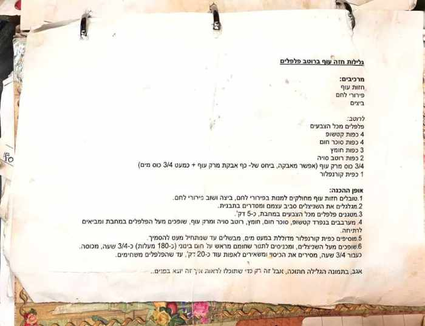
גלילות חזה עוף ברוטב פלפלים
— מהקלסר
בשרי
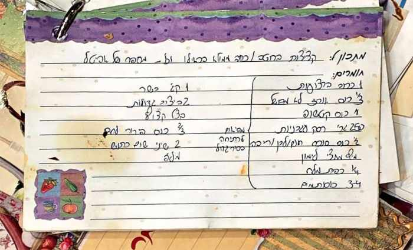
קציצות בשר ברוטב מתקתק
— מהספר של אביטל
בשרי
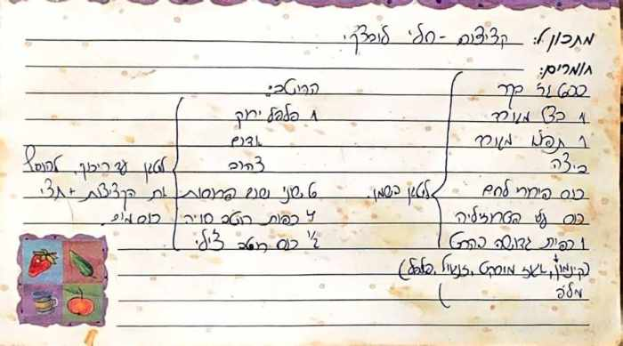
הקציצות של חלי לופצ׳י
— חלי לופצ׳י
בשרי
הקוגל של כל שבת
— בס"ד, מהפנקס
פרווה
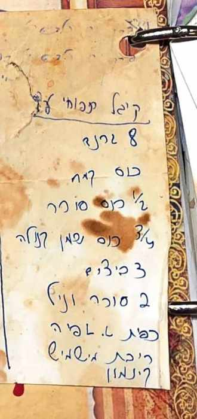
עוגיות לימון (שסמי אוהבת)
— בשביל סמי
פרווה
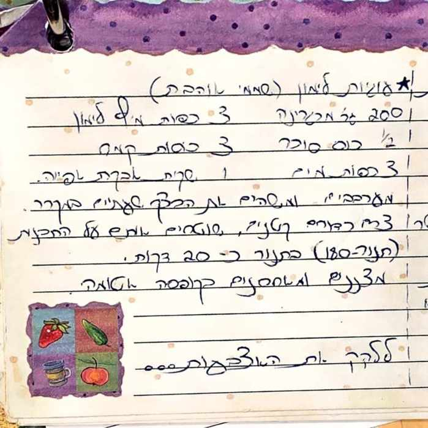
הבראוניז של מיסיסיפי
— מהפתק הצהוב
חלבי
עוגת גבינה טופו
— דבי יעל
חלבי
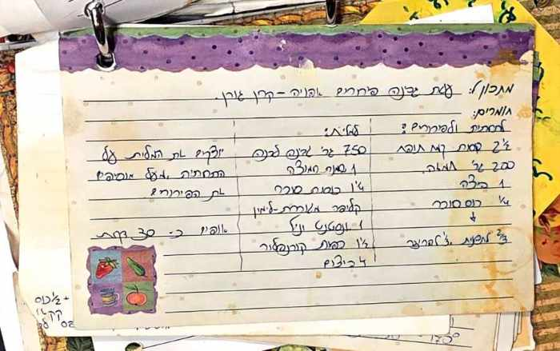
עוגת גבינה פירורים אפויה
— קרן גורן
חלבי
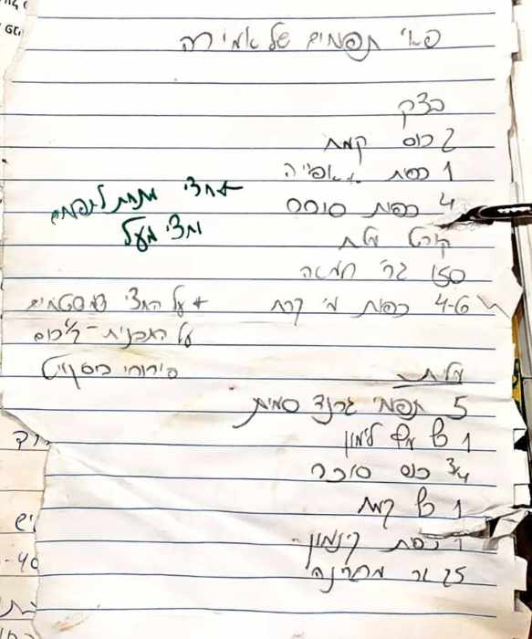
פאי תפוחים של אורה
— של אורה
פרווה
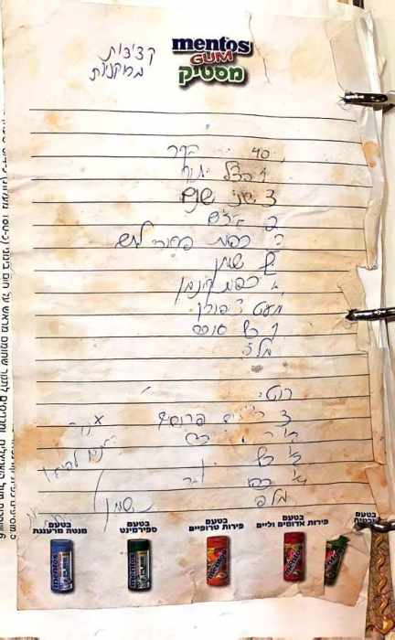
קציצות ממולאות
— מהפנקס הישן (כתב יד קשה...)
בשרי
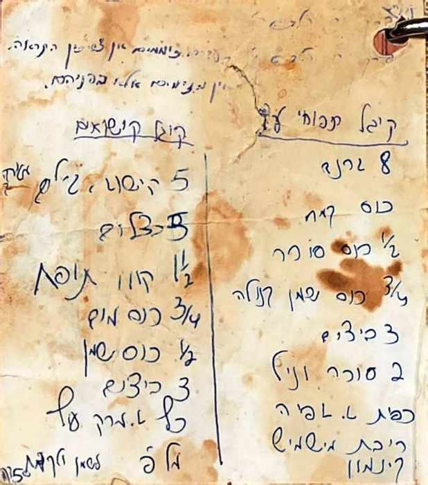
קוגל תפוחי עץ
— מהפנקס הישן
פרווה
לא נמצאו מתכונים תואמים.